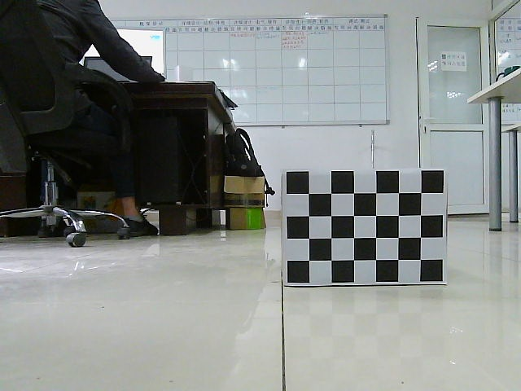

简介
毫米波和单目融合的研究，通过融合视觉的识别特性和毫米波的测距特性，实现目标识别和测距功能。更深层次可以通过深度学习提取出深度信息。
环境要求
- Ubuntu 18.04
- Cuda 10.0
- ROS melodic
- Qt5
软件环境部署
QT安装
- sudo apt-get install qttools5-dev-tools libqt5svg5-dev qtmultimedia5-dev
ROS melodic 安装
Cuda10.0 ，cudnn安装
把程序包里的 radar文件夹拷贝到本地
在此目录下，执行 catkin_make 指令

编译完成后，指令输入
sudo ip link set can0 up type can bitrate 500000
roslaunch ars_40X ars_40X.launch
在设备链接正常的情况下就可看到输出
ARS404的应用
cansend can0 200#F8000000089C0000 // Objects detection with all extended properties
cansend can0 200#F8000000109C0000 // Clusters detection with all extended properties
这两条指令分别启动radar的 Cluster模式和Object模式，我们使用Object模式，（cluster模式）
毫米波雷达数据是二维数据，只有x, y 坐标信息， 显示如上图
毫米波雷达数据读取，我们使用 ars_40X程序
数据显示和图像显示，我们使用 ros2qt 程序
图像物体识别，我们使用 vision_darknet_detect 程序
毫米波和图像的融合
- 首先对摄像头进行标定
- 获取内参矩阵
- 通过内参矩阵把毫米波数据映射到图像上
- 通过yolo识别，并提取出物体距离，如下图

摄像头标定
摄像头标定可以使用opencv提供的标定方法，也可以使用matlab提供的摄像头标定插件。
我们介绍下matlab摄像头标定方法。为了方便标定，我们制作了两个”标定盒子”
通过该摄像头依次采集如下位置图片位于image文件夹





在matlab 应用程序下找到Camera Calibration工具箱
加载待标定的图像
填写棋盘格每个格子边长的真实值
可以预览成功检测出棋盘格的图像，然后开始标定，点击Calibrate

平均误差小于0.5即可
导出相机标定参数
我们只需要用到 IntrinsicMatrix
cv::Point World2Image(Eigen::Vector3d Pw)
{
static Eigen::Matrix3d intric = (Eigen::Matrix3d() << 465.2203, 0, 351.1325, 0, 463.8023, 256.4198, 0, 0, 1).finished();
static Eigen::Matrix3d mi = (Eigen::Matrix3d() << 1, 0, 0, 0, -1,0, 0, 0, 1).finished();
Pw = mi*Pw;
Eigen::VectorXd result(2);
result = intric*Pw/Pw.z();
cv::Point P (result(0),result(1));
return P;
}
通过world2image函数把毫米波坐标系转换到图像坐标系
这样在图像中，我们就有了深度信息。
然后再通过yolo的darknet进行物体识别，就可得到，障碍物的类别和距离信息。
这里需要注意的是，我们的摄像头和毫米波安装位置关系，由于毫米波只有x，y信息，没有高度信息，所以我们尽量保持摄像头和毫米波竖直方向上中心线重合。
备注，如果想要更改摄像头和毫米波的相对位置，只需通过刚性变换矩阵，进行坐标系转换
$$
变换矩阵里$$是3x3旋转矩阵，xyz是平移矩阵。
只需更改对应的旋转平移参数，即可进行坐标系转换。
darknet
我们在程序里使用了yolo v3进行物体识别

如何提取出距离信息
我们已经把毫米波的距离信息投影到了图片上，同时，我们用yolo对障碍物进行了识别分类，画出了边界框。
我们只需要把边界框内部的距离信息提取出来即可。由于毫米波有误差，所以我们需要对这些边界框里的信息进行筛选。在一般情况下，摄像头可以直接检测到的物体，说明此物体前面没有障碍物，因为光是直线传播的。也就是说如果障碍物前方还有有障碍物，摄像头很大可能就看不到后面那一个，但是毫米波可能通过漫反射看到了，产生多个距离信息。所以，我们就可以提取边界框里的最小距离当做识别障碍物的距离。这同样是出于安全考虑，需要选择距离最近的距离。
我们可以根据性能要求，提出更好的提取深度信息方法。
图中灰色的点是毫米波投射到图像上的点，黄色的框是yolo识别的边界框
整个算法的具体实现逻辑可以阅读程序包里完整的程序。
预测碰撞时间，udp。
毫米波单目深度融合(深度学习)
环境
- Ubuntu 18.04
- Cuda 10.0
- Pytorch 1.3.1
- Python 3.6.5
使用 radar_depth深度神经网络,参见网址
环境搭建
深度融合的基础是我们上面的数据级融合。
第一步，把程序包里的 radar_depth 文件夹拷贝到本地
cd radar_depth
pip install -r requirement.txt
安装过程中如果出现要求版本的库缺失，例如 nuscenes-devkit 1.1.5
可以单独安装
pip install nuscenes-devkit==1.1.5
环境搭建完后，更改config/config_nuscenes.py. 处的项目设置
PROJECT_ROOT = "YOUR_PATH/radar_depth"
DATASET_ROOT = "DATASET_PATH"
可以对该神经网络架构进行深入研究 pdf
接下来，我们需要准备神经网络输入数据（图片和雷达数据）运行神经网络推理，得到输出数据。
输入
- 雷达数据 。。。
输入数据准备，需要利用程序包里 radar/src/ars_40X/src/ros/deal_data4net.cpp 节点来制造神经网络输入数据。
先启动数据采集
sudo ip link set can0 up type can bitrate 500000
roslaunch ars_40X ars_40X.launch
rosrun ars_40X deal_data4net
运行会存档一张图片 pic.jpg 和 雷达数据 result.csv
神经网络推理
我们使用 MyFun.py脚本进行推理
im = Image.open('/home/promote/pic.jpg') # 为图像读取接口
。。。
with open('/home/promote/result.csv', newline='') as f: #为雷达读取接口
只需修改为本地正确的路径
推理
python MyFun.py \
--evaluate /home/username/radar_depth/pretrained/resnet18_multistage.pth.tar \
--data nuscenes \
--arch resnet18_multistage_uncertainty_fixs \
--modality rgbd \
--sparsifier radar \
--decoder upproj
输出